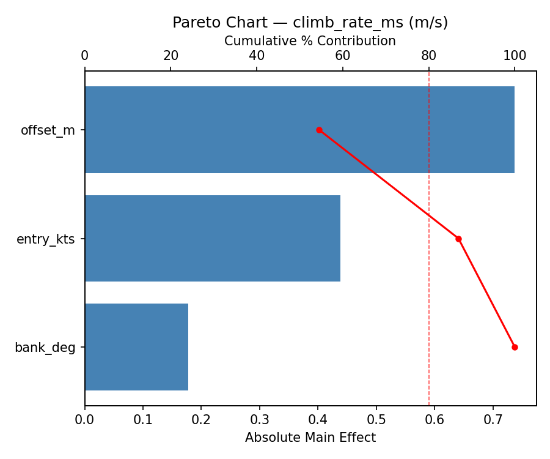
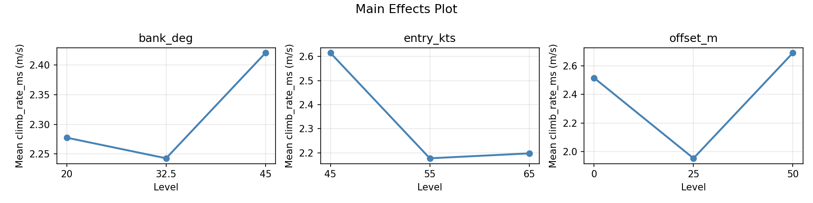
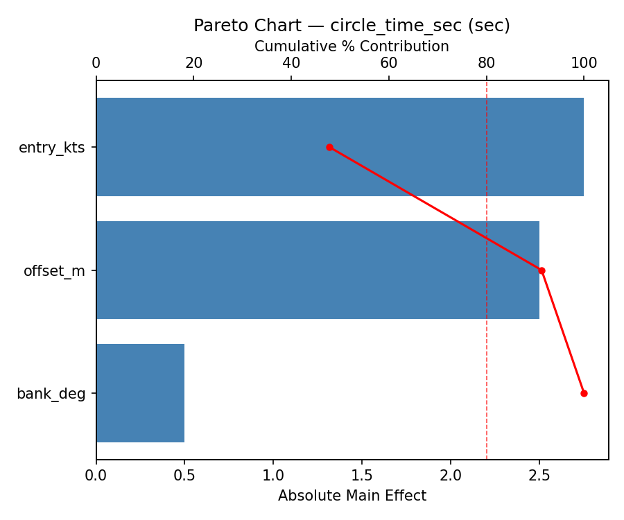
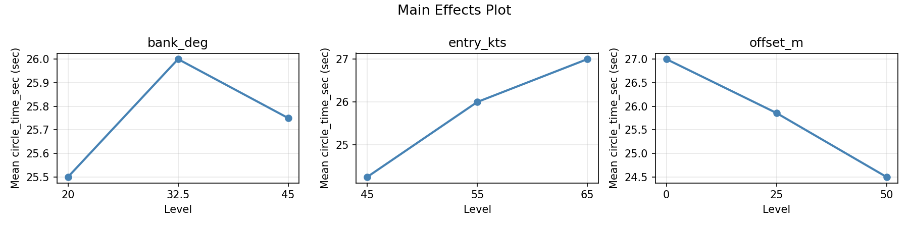
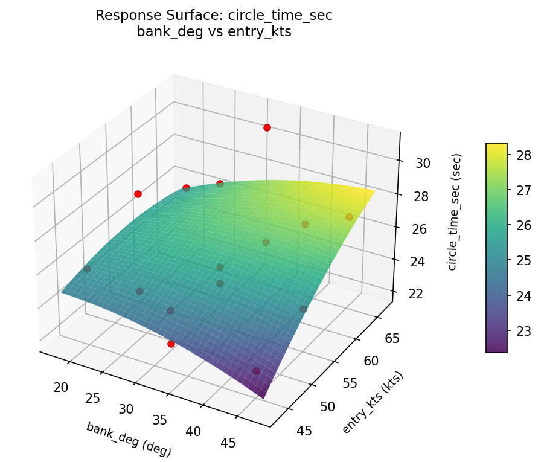
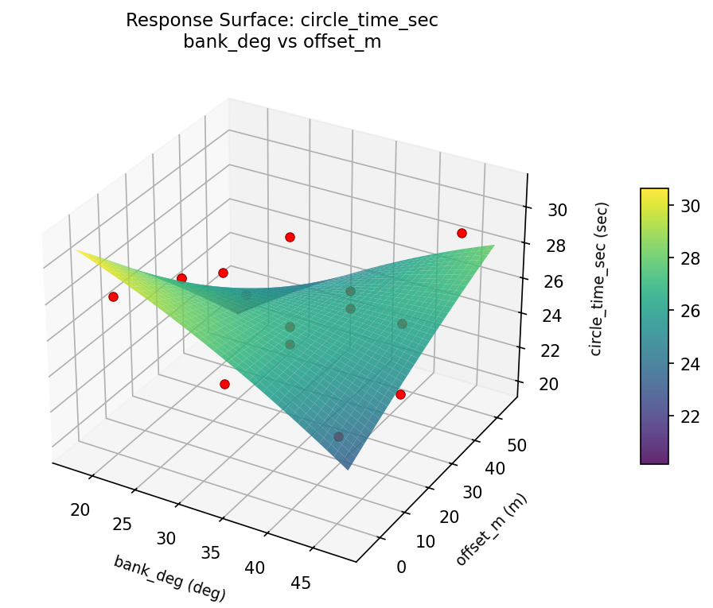
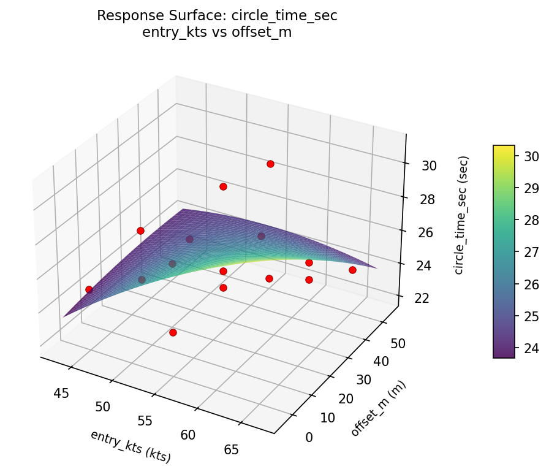
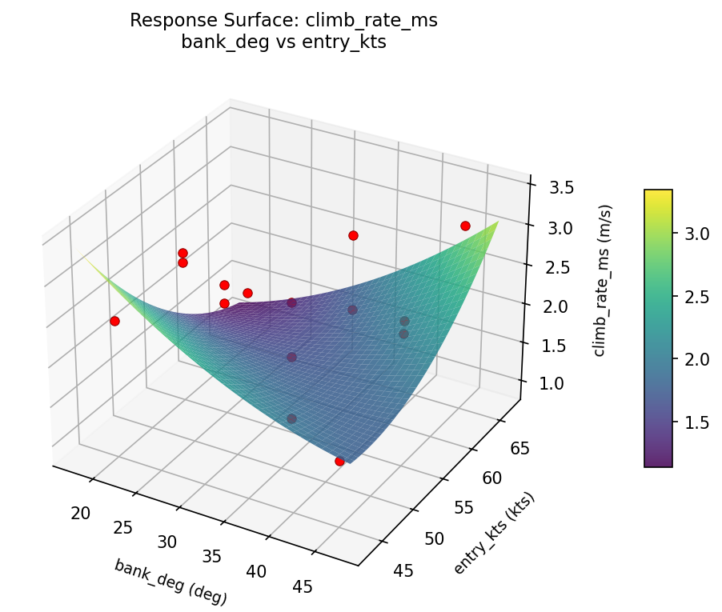
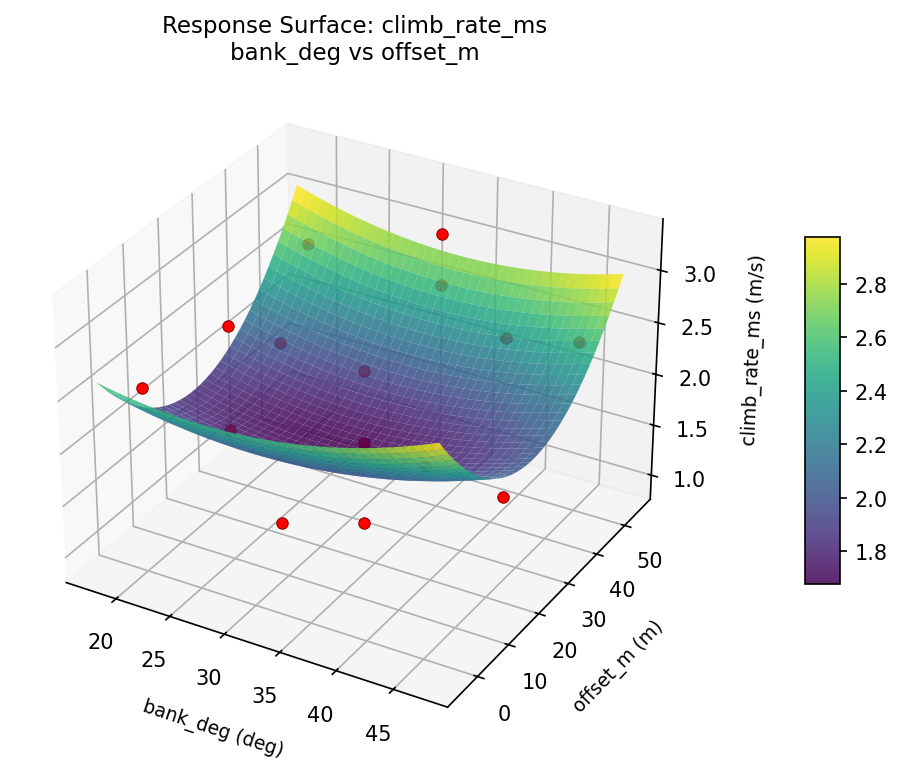
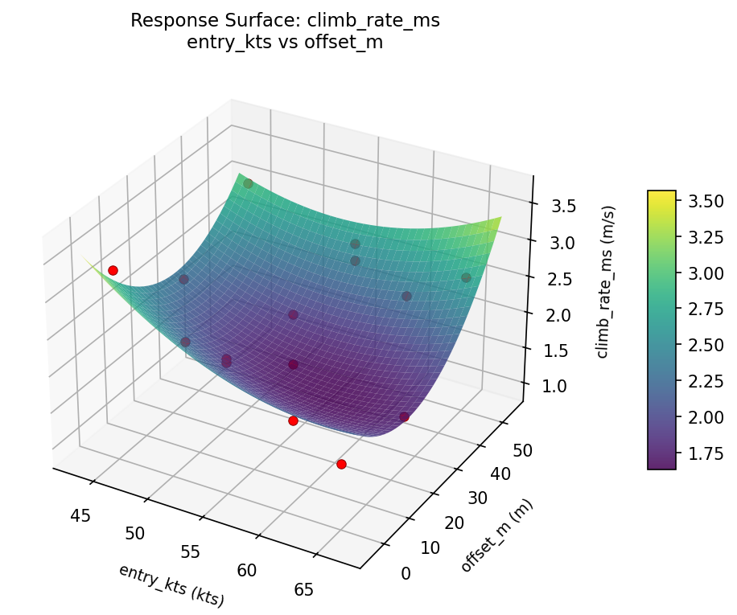

Summary
This experiment investigates glider thermal soaring strategy. Box-Behnken design to maximize altitude gain and minimize circle time by tuning bank angle, entry speed, and thermal centering offset.
The design varies 3 factors: bank deg (deg), ranging from 20 to 45, entry kts (kts), ranging from 45 to 65, and offset m (m), ranging from 0 to 50. The goal is to optimize 2 responses: climb rate ms (m/s) (maximize) and circle time sec (sec) (minimize). Fixed conditions held constant across all runs include glider = standard_class, thermal strength = 3m/s.
A Box-Behnken design was chosen because it efficiently fits quadratic models with 3 continuous factors while avoiding extreme corner combinations — requiring only 15 runs instead of the 8 needed for a full factorial at two levels.
Quadratic response surface models were fitted to capture potential curvature and factor interactions. The RSM contour plots below visualize how pairs of factors jointly affect each response.
Key Findings
For climb rate ms, the most influential factors were offset m (54.5%), entry kts (32.4%), bank deg (13.1%). The best observed value was 3.31 (at bank deg = 45, entry kts = 55, offset m = 0).
For circle time sec, the most influential factors were entry kts (47.8%), offset m (43.5%), bank deg (8.7%). The best observed value was 22.0 (at bank deg = 32.5, entry kts = 65, offset m = 0).
Recommended Next Steps
- Run confirmation experiments at the predicted optimal settings to validate the model.
- Consider whether any fixed factors should be varied in a future study.
Experimental Setup
Factors
| Factor | Low | High | Unit |
|---|
bank_deg | 20 | 45 | deg |
entry_kts | 45 | 65 | kts |
offset_m | 0 | 50 | m |
Fixed: glider = standard_class, thermal_strength = 3m/s
Responses
| Response | Direction | Unit |
|---|
climb_rate_ms | ↑ maximize | m/s |
circle_time_sec | ↓ minimize | sec |
Configuration
{
"metadata": {
"name": "Glider Thermal Soaring Strategy",
"description": "Box-Behnken design to maximize altitude gain and minimize circle time by tuning bank angle, entry speed, and thermal centering offset"
},
"factors": [
{
"name": "bank_deg",
"levels": [
"20",
"45"
],
"type": "continuous",
"unit": "deg"
},
{
"name": "entry_kts",
"levels": [
"45",
"65"
],
"type": "continuous",
"unit": "kts"
},
{
"name": "offset_m",
"levels": [
"0",
"50"
],
"type": "continuous",
"unit": "m"
}
],
"fixed_factors": {
"glider": "standard_class",
"thermal_strength": "3m/s"
},
"responses": [
{
"name": "climb_rate_ms",
"optimize": "maximize",
"unit": "m/s"
},
{
"name": "circle_time_sec",
"optimize": "minimize",
"unit": "sec"
}
],
"settings": {
"operation": "box_behnken",
"test_script": "use_cases/268_glider_thermal/sim.sh"
}
}
Experimental Matrix
The Box-Behnken Design produces 15 runs. Each row is one experiment with specific factor settings.
| Run | bank_deg | entry_kts | offset_m |
|---|
| 1 | 32.5 | 45 | 0 |
| 2 | 32.5 | 55 | 25 |
| 3 | 45 | 55 | 50 |
| 4 | 45 | 55 | 0 |
| 5 | 32.5 | 55 | 25 |
| 6 | 32.5 | 55 | 25 |
| 7 | 20 | 55 | 50 |
| 8 | 45 | 45 | 25 |
| 9 | 32.5 | 45 | 50 |
| 10 | 45 | 65 | 25 |
| 11 | 20 | 55 | 0 |
| 12 | 32.5 | 65 | 50 |
| 13 | 20 | 45 | 25 |
| 14 | 20 | 65 | 25 |
| 15 | 32.5 | 65 | 0 |
Step-by-Step Workflow
1
Preview the design
$ python doe.py info --config use_cases/268_glider_thermal/config.json
2
Generate the runner script
$ python doe.py generate --config use_cases/268_glider_thermal/config.json \
--output use_cases/268_glider_thermal/results/run.sh --seed 42
3
Execute the experiments
$ bash use_cases/268_glider_thermal/results/run.sh
4
Analyze results
$ python doe.py analyze --config use_cases/268_glider_thermal/config.json
5
Get optimization recommendations
$ python doe.py optimize --config use_cases/268_glider_thermal/config.json
6
Generate the HTML report
$ python doe.py report --config use_cases/268_glider_thermal/config.json \
--output use_cases/268_glider_thermal/results/report.html
Real-World Experiment Workflow
ℹ
Physical Aerospace Test? Use the Manual Workflow
Flight and aerospace experiments involve real aerodynamics, propulsion, and atmospheric conditions requiring physical testing. The simulation script above is for demonstration. For your real experiments, use record, status, and export-worksheet.
$ python doe.py export-worksheet --config use_cases/268_glider_thermal/config.json \
--format csv --output worksheet.csv
$ python doe.py status --config use_cases/268_glider_thermal/config.json
$ python doe.py record --config use_cases/268_glider_thermal/config.json --run 1
$ python doe.py analyze --config use_cases/268_glider_thermal/config.json --partial
$ python doe.py analyze --config use_cases/268_glider_thermal/config.json
$ python doe.py optimize --config use_cases/268_glider_thermal/config.json
$ python doe.py report --config use_cases/268_glider_thermal/config.json \
--output report.html
✔
Works Without a Test Script
The analysis pipeline doesn't care how results were produced. Record your measurements with record, and the full analysis, optimization, and reporting pipeline works identically. Use --partial to get early insights before all runs are complete.
Features Exercised
| Feature | Value |
|---|
| Design type | box_behnken |
| Factor types | continuous (all 3) |
| Arg style | double-dash |
| Responses | 2 (climb_rate_ms ↑, circle_time_sec ↓) |
| Total runs | 15 |
Analysis Results
Generated from actual experiment runs using the DOE Helper Tool.
Response: climb_rate_ms
Top factors: offset_m (54.5%), entry_kts (32.4%), bank_deg (13.1%).
Pareto Chart

Main Effects Plot

Response: circle_time_sec
Top factors: entry_kts (47.8%), offset_m (43.5%), bank_deg (8.7%).
Pareto Chart

Main Effects Plot

Response Surface Plots
3D surfaces fitted with quadratic RSM. Red dots are observed data points.
circle time sec bank deg vs entry kts

circle time sec bank deg vs offset m

circle time sec entry kts vs offset m

climb rate ms bank deg vs entry kts

climb rate ms bank deg vs offset m

climb rate ms entry kts vs offset m

Full Analysis Output
RSM surface: rsm_climb_rate_ms_bank_deg_vs_entry_kts.png
RSM surface: rsm_climb_rate_ms_bank_deg_vs_offset_m.png
RSM surface: rsm_climb_rate_ms_entry_kts_vs_offset_m.png
RSM surface: rsm_circle_time_sec_bank_deg_vs_entry_kts.png
RSM surface: rsm_circle_time_sec_bank_deg_vs_offset_m.png
RSM surface: rsm_circle_time_sec_entry_kts_vs_offset_m.png
=== Main Effects: climb_rate_ms ===
Factor Effect Std Error % Contribution
--------------------------------------------------------------
offset_m 0.7371 0.1763 54.5%
entry_kts 0.4379 0.1763 32.4%
bank_deg 0.1771 0.1763 13.1%
=== Summary Statistics: climb_rate_ms ===
bank_deg:
Level N Mean Std Min Max
------------------------------------------------------------
20 4 2.2775 0.5501 1.4600 2.6500
32.5 7 2.2429 0.8537 0.9300 3.3100
45 4 2.4200 0.6227 1.5900 3.0900
entry_kts:
Level N Mean Std Min Max
------------------------------------------------------------
45 4 2.6150 0.7703 1.5900 3.3100
55 7 2.1771 0.6309 0.9300 2.6500
65 4 2.1975 0.7774 1.4600 3.0900
offset_m:
Level N Mean Std Min Max
------------------------------------------------------------
0 4 2.5150 0.6836 1.6400 3.3100
25 7 1.9529 0.7354 0.9300 3.0900
50 4 2.6900 0.2844 2.4200 3.0900
=== Main Effects: circle_time_sec ===
Factor Effect Std Error % Contribution
--------------------------------------------------------------
entry_kts 2.7500 0.6983 47.8%
offset_m 2.5000 0.6983 43.5%
bank_deg 0.5000 0.6983 8.7%
=== Summary Statistics: circle_time_sec ===
bank_deg:
Level N Mean Std Min Max
------------------------------------------------------------
20 4 25.5000 2.5166 22.0000 28.0000
32.5 7 26.0000 3.1623 23.0000 31.0000
45 4 25.7500 2.7538 23.0000 29.0000
entry_kts:
Level N Mean Std Min Max
------------------------------------------------------------
45 4 24.2500 1.5000 23.0000 26.0000
55 7 26.0000 3.0000 22.0000 30.0000
65 4 27.0000 2.9439 24.0000 31.0000
offset_m:
Level N Mean Std Min Max
------------------------------------------------------------
0 4 27.0000 3.1623 24.0000 31.0000
25 7 25.8571 2.2678 23.0000 30.0000
50 4 24.5000 3.1091 22.0000 29.0000
Pareto chart (climb_rate_ms): use_cases/268_glider_thermal/results/analysis/pareto_climb_rate_ms.png
Pareto chart (circle_time_sec): use_cases/268_glider_thermal/results/analysis/pareto_circle_time_sec.png
Main effects (climb_rate_ms): use_cases/268_glider_thermal/results/analysis/main_effects_climb_rate_ms.png
Main effects (circle_time_sec): use_cases/268_glider_thermal/results/analysis/main_effects_circle_time_sec.png
Optimization Recommendations
=== Optimization: climb_rate_ms ===
Direction: maximize
Best observed run: #1
bank_deg = 45
entry_kts = 55
offset_m = 0
Value: 3.31
RSM Model (linear, R² = 0.1827, Adj R² = -0.0402):
Coefficients:
intercept +2.2993
bank_deg +0.2238
entry_kts +0.2562
offset_m -0.1825
RSM Model (quadratic, R² = 0.8475, Adj R² = 0.5730):
Coefficients:
intercept +2.4900
bank_deg +0.2237
entry_kts +0.2562
offset_m -0.1825
bank_deg*entry_kts +0.4750
bank_deg*offset_m -0.6225
entry_kts*offset_m +0.1275
bank_deg^2 -0.5850
entry_kts^2 -0.1050
offset_m^2 +0.3325
Curvature analysis:
bank_deg coef=-0.5850 concave (has a maximum)
offset_m coef=+0.3325 convex (has a minimum)
entry_kts coef=-0.1050 concave (has a maximum)
Notable interactions:
bank_deg*offset_m coef=-0.6225 (antagonistic)
bank_deg*entry_kts coef=+0.4750 (synergistic)
Predicted optimum (from quadratic model):
bank_deg = 45
entry_kts = 55
offset_m = 0
Predicted value: 3.2662
Model quality: Good fit — general trends are captured, some noise remains.
Factor importance:
1. bank_deg (effect: 0.8, contribution: 43.4%)
2. offset_m (effect: 0.6, contribution: 29.7%)
3. entry_kts (effect: 0.5, contribution: 26.9%)
=== Optimization: circle_time_sec ===
Direction: minimize
Best observed run: #8
bank_deg = 32.5
entry_kts = 65
offset_m = 0
Value: 22.0
RSM Model (linear, R² = 0.6128, Adj R² = 0.5072):
Coefficients:
intercept +25.8000
bank_deg +1.8750
entry_kts -1.1250
offset_m +1.7500
RSM Model (quadratic, R² = 0.8641, Adj R² = 0.6195):
Coefficients:
intercept +26.3333
bank_deg +1.8750
entry_kts -1.1250
offset_m +1.7500
bank_deg*entry_kts -0.5000
bank_deg*offset_m +1.2500
entry_kts*offset_m -0.7500
bank_deg^2 +1.0833
entry_kts^2 -0.4167
offset_m^2 -1.6667
Curvature analysis:
offset_m coef=-1.6667 concave (has a maximum)
bank_deg coef=+1.0833 convex (has a minimum)
entry_kts coef=-0.4167 concave (has a maximum)
Notable interactions:
bank_deg*offset_m coef=+1.2500 (synergistic)
entry_kts*offset_m coef=-0.7500 (antagonistic)
bank_deg*entry_kts coef=-0.5000 (antagonistic)
Predicted optimum (from quadratic model):
bank_deg = 45
entry_kts = 55
offset_m = 50
Predicted value: 30.6250
Model quality: Good fit — general trends are captured, some noise remains.
Factor importance:
1. bank_deg (effect: 3.8, contribution: 39.5%)
2. offset_m (effect: 3.5, contribution: 36.8%)
3. entry_kts (effect: 2.2, contribution: 23.7%)